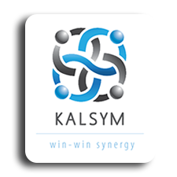

<nav class="navbar" style="background-color: #3097d1;">
    <a class="navbar-brand" routerLink="/apply-leave">
        
    </a>

    <span class="span-heading text-center">Kalsym Leave Application Portal</span>

    <!-- <div class="dropdown" style="margin-right: 10px;"> -->
    <button (click)="logout()" class="btn btn-primary" type="button" id="dropdownMenuButton" data-toggle="dropdown" aria-haspopup="true" aria-expanded="false">
          Logout
        </button>
    <!-- </div> -->
</nav>